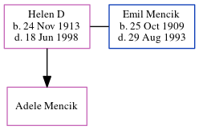

Amy Horne (née Spratt) cMay 1879 - 1921
[ Home ] | [ Calendar ] | [ Surnames Index ] | [ Errors ] | [ Family History ]The child of John Spratt (an agricultural labourer) and Sophia Dale, Amy Spratt, the great-aunt of Nigel Horne, was born in St Nicholas-at-Wade, Kent, England c. May 18791,2,3,4,5, was baptised there on 1 Jun 1879, the same day as her twin sister Ada and married Charles Horne (a market gardener worker with whom she had 6 children: Charles Isaac, Ida May, Leonard Edmund, Rosina Ellen, Lillian A and Iris Joan) in Thanet, Kent, England around Nov 19086.
During her life, she was living at her birthplace in 18811; at The Street in St Nicholas-at-Wade on 3 Apr 18818; at her birthplace in 18912; in Birchington, Kent, England in 19013; at Walnut Tree Cottages, Haine in Thanet on 2 Apr 19117; and at Sackettshill Farm in Thanet on 19 Jun 19219.
She died between 1921 and 29 Sept 1939.
Parents
- John was born on 26 Mar 1852
- Sophia was born on 15 Nov 1853
Children
- Charles Isaac was born c. Aug 1909
- Ida May was born on 20 Nov 1910
- Leonard Edmund was born on 5 Jun 1912
- Rosina Ellen was born c. Feb 1916
- Lillian A was born c. May 1917
- Iris Joan was born on 19 Feb 1921
Citations
- 1881 England Census Online publication - Provo, UT, USA: The Generations Network, Inc., 2004. 1881 British Isles Census Index provided by The Church of Jesus Christ of Latter-day Saints © Copyright 1999 Intellectual Reserve, Inc. All rights reserved. All use is subject to the
- 1891 England Census Online publication - Provo, UT, USA: The Generations Network, Inc., 2005.Original data - Census Returns of England and Wales, 1891. Kew, Surrey, England: The National Archives of the UK (TNA): Public Record Office (PRO), 1891. Data imaged from The National
- 1901 England Census Online publication - Provo, UT, USA: The Generations Network, Inc., 2005.Original data - Census Returns of England and Wales, 1901. Kew, Surrey, England: The National Archives of the UK (TNA): Public Record Office (PRO), 1901. Data imaged from the National
- 1911 England Census Online publication - Provo, UT, USA: Ancestry.com Operations, Inc., 2011.Original data - Census Returns of England and Wales, 1911. Kew, Surrey, England: The National Archives of the UK (TNA), 1911. Data imaged from the National Archives, London, England.
- England & Wales, FreeBMD Birth Index, 1837-1915 Online publication - Provo, UT, USA: The Generations Network, Inc., 2006.Original data - General Register Office. England and Wales Civil Registration Indexes. London, England: General Register Office. © Crown copyright. Published by permission of the Cont
- 1911 England Census Online publication - Provo, UT, USA: Ancestry.com Operations, Inc., 2011.Original data - Census Returns of England and Wales, 1911. Kew, Surrey, England: The National Archives of the UK (TNA), 1911. Data imaged from the National Archives, London, England.
- 1911 Census for England & Wales - Findmypast (was age 31 and the wife of the head of the household)
- 1881 England, Wales & Scotland Census - Findmypast (was age 2 and the daughter of the head of the household)
- 1921 Census Of England & Wales - Findmypast (was age 42 and the wife of the head of the household)
Media
England & Wales marriages 1837-2008 - BMD/M/1908/4/AZ/000186/226
1911 England, Wales - GBC-1911-RG14-04511-0115-3
1911 England, Wales & Scotland Census Transcription - GBC-1911-RG14-04511-0115-4
England & Wales births 1837-2006 - BMD/B/1879/2/AZ/000529/015
England & Wales marriages 1837-2008 - BMD/M/1908/4/AZ/000356/294
Kent Baptisms - GBPRS/CANT/B/96802125
England Births & Baptisms 1538-1975 - R_884660742
1921 Census of England & Wales - GBC/1921/RG15/04458/0431/02
Family Tree
Map
Generated by ged2site. Last updated on Jul 3, 2024
Known Issues
Death date (bet 1921 and 29 Sep 1939) has no citations
Location for 3 Apr 1881 (St Nicholas-at-Wade, Kent, England) differs from mother's (The Street, St Nicholas-at-Wade, Kent, England)
Date of residence (1881) differs from mother's in same year (3 Apr 1881)
1881: Not living with either parent in childhood when aged 2
Location for 5 Apr 1891 (St Nicholas-at-Wade, Kent, England) differs from mother's (Shuart Cottage, Podden Street, St Nicholas-at-Wade, Kent, England)
Date of residence (1891) differs from mother's in same year (5 Apr 1891)
1891: Not living with either parent in childhood when aged 12
Date of death is known, but not place